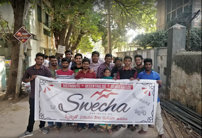

|  |
The organization is a social movement working towards educating the masses with the essence of Free Software and to provide knowledge to the commoners.
Swecha organizes workshops and seminars in the Indian state of Telangana and Andhra Pradesh. Presently Swech.a is active GLUG in many engineering colleges like International Institute of Information Technology, Hyderabad , Jawaharlal Nehru Technological University, Hyderabad, Chaitanya Bharathi Institute of Technology,St. Martin's Engineering College, Sridevi Women's Engineering College, Mahatma Gandhi Institute of Technology, SCIENT Institute of Technology, CMR Institute of Technology, Hyderabad, Jyothishmathi College of Engineering and Technology, MVGR College of Engineering, K L University and Ace Engineering College.
CONTENTS
*Objectives
*Activism
*See Also
objectives
The main objectives of the organization are as follows:
*To take forward free software and its ideological implications to all corners of our country from the developed domains to the underprivileged.
*To create awareness among computer users in the use of free software.
*To work towards usage of free software in all streams of sciences and research.
*To take forward implementation and usage of free software in school education, academics and higher education.
*To work towards e-literacy and bridging digital divide based on free software and mobilizing the underprivileged.
*To work among developers on solutions catering to societal & national requirements.
*To work towards a policy change favoring free software in all walks of life.
Activism
*Swecha organised a free software workshop and delivered a talk on "The Age of Inequality", Mr. Palagummi Sainath told the gathered engineering students and researchers that half of the country's children suffered from malnourishment and at the same time, the situation was getting worse for farmers and suicides among them were high, Despite a high growth rate, malnourishment of children in the country remained at 46 per cent which was behind countries of Sub-Saharan Africa where these figures stood between 32 per cent to 35 percen
*Swecha widespread protests taking place across the country after the arrest of two girls over a Facebook comment, have now reached Hyderabad. On Sunday, a group, consisting mostly of IT professionals, students and academicians, protested at Indira Park against the controversial Section 66 (A) of Information Technology Act
*The Swecha was in the forefront of the protests against the inclusion of proprietary software in the representation to All India Council for Technical Education (AICTE) against the deal with Microsoft
*Swecha organised a seminar on "Employment opportunities in changing technology landscape", on 23 September at Mahima Gardens, Member of German Hacker Association Chaos Computer Club, Andy Müller-Maguhn, director of Social and Economic Justice at Thoughtworks, Matt Simons and secretary of Free Software Movement of India Y.Kiran Chandra addressed the students and later joined the Free Software Movement started by Richard Stallman
*The seminar was organised by Swecha, on the free software development model, Mr Neville Roy Singham explained that spying or surveillance can be easily done through hardware as well as software, and that no electronic device can be safe from it. The NSA is doing it because it is simply very cheap for them, and that they are taking in literally every piece of information they can get. More than 3,000 students, mainly from the engineering stream attended the seminar, which continued till late evening, as many other speakers like Renata Avila, a human rights lawyer and internet freedom activist from Guatemala, Dmytri Kleiner, Telemiscommunications specialist, and Zack Exley, ex-Chief Revenue Officer, Wikimedia foundation also conducted seminars and interacted with students.
*Internet surveillance and digital snooping on the people is the biggest threat to democracy said by the Richard Stallman Internet surveillance and spying is dangerous and threatens the functioning of democracy, Dr. Stallman told students at a seminar on "Free Software and Internet Freedom", organised by Swecha on the Acharya Nagarjuna University campus
See Also
*Free Software Foundation
*Free Software Movement
*Free Software Foundation Tamil Nadu
*Free Software Movement of Karnataka
*Public Patent Foundation
*Software Freedom Law Center